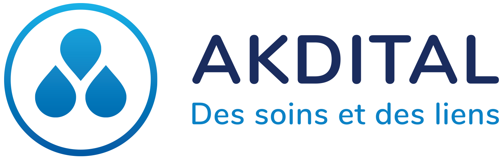

Akdital est un groupe marocain de cliniques privées fondé en 2011 par Rochdi Talib et Fatima Akdim. Il adopte en 2018 la dénomination « Akdital », formée à partir des noms de ses fondateurs. À la suite de la libéralisation du secteur des cliniques privées au Maroc, le groupe amorce une phase d’expansion et ouvre plusieurs établissements dans le pays. Akdital est introduit en bourse le 14 décembre 2022 à la Bourse de Casablanca. Le groupe est fondé en 2011 par Rochdi Talib, un médecin et homme d'affaires casablancais. Il est médecin anesthésiste-réanimateur, marié avec Fatima Akdim, médecin radiologue. Ils ont été formés à la faculté de médecine de Casablanca, avant d'obtenir leur spécialité à la faculté de médecine de Paris. Le groupe Akdital tire ses initiales des noms du couple Akdim et Talib (Akdi-Tal). La première clinique qu'il lance est la clinique de Jerrada Oasis. Le développement des cliniques privées de Rochdi Talib est financé par son beau père, l'homme d'affaires Hassan Akdim, un industriel du textile[réf. nécessaire]. le ministre de la Santé Houcine El Ouardi fait voter la « loi 131-13 », qui libéralise le secteur des cliniques privées. Il n'est alors plus nécessaire d'être docteur en médecine et inscrit à l'Ordre des médecins pour pouvoir posséder une clinique privée[5]. Le fonds d'investissement Mediteranea Capital Partners (Medcap), dirigé par le financier Saâd Bendidi, rentre dans le capital du groupe Akdital via une structure basée à Malte[6]. À la suite du discours du trône du 29 juillet 2020, appelant à généraliser la couverture médicale des Marocains, le groupe Akdital souhaite recevoir un soutien financier de l'État marocain[7]. Fin 2022, le groupe annonce vouloir s'introduire en bourse avec le soutien des banques d'affaires BMCE Capital et CFG Bank [8],[9]. L'introduction en bourse est réalisée le 14 décembre 2022
